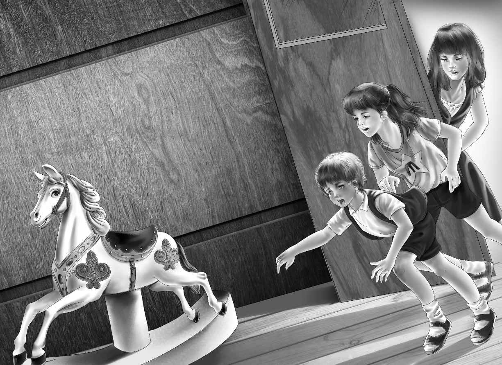
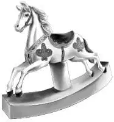
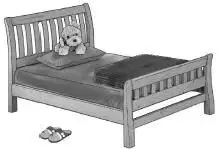

Mr. and Mrs. Beach were hardly in the house when Jeffrey and Sam told them about the round window.
“That is a mystery,” said Mr. Beach. “I can’t remember any round window. And Max and I never saw it from the tree house we built.”
The boys took their father out and showed him how they could see the window from the tree house. Mr. Beach looked at the tree and then he said, “I know why Max and I never saw that window. There was a big branch in the way. See? There is a scar where the branch was cut off. ”
“May we ask Benny and the others and go up in the attic now? ” Sammy asked. “The Aldens didn’t want to come in without asking you.”
“Yes, it will be all right,” Mr. Beach answered. “I haven’t time to help you.”
Jeffrey telephoned the Aldens, and Benny said he would come right over. Jessie and Henry were away, but he and Violet could come.
It was late afternoon when the two Aldens and the Beaches climbed the attic stairs.
Violet said, “I just can’t understand where that window can be when no one knows anything about it.”
Jeffrey explained, “The attic is so big it has been made into rooms. It is really more like a third floor than an attic. The walls are plastered and papered. You’ll see.”
Benny looked all around at the top of the stairs. That side of the attic had been made into two rooms. The first room was large, but it was empty.
“I think someone lived up on this floor,” Benny said. “You can see the nail holes at the windows where there were rods for curtains.”
Violet said, “There’s some wallpaper, too.”
Jeffrey said, “But there aren’t any electric lights up here.”
Sammy said, “We think the house was built before there were electric lights. People must have used lamps or maybe candles.”
Violet looked at the dark corners of the empty room. It was certainly a spooky place. Violet noticed that everyone was beginning to whisper. The air was dry and stuffy.
The four children went into the next room. They found only some old boxes and chairs. They were dusty and faded.
“Never mind this side of the house,”said Jeffrey. “The round window is at the back of the house.”
Sammy said, “There’s a very large clothes closet. It’s almost as big as a room.”
“That’s what we want to see,” said Benny.
There was a door to the closet. It had a glass doorknob. Jeffrey opened it and they all went in.
“Oh, look at the wallpaper!” Violet exclaimed. “I never saw anything like it.”
It was beautiful old paper with pictures of toys on it: balls and horns and drums. The colors were still bright. There was one big window, but it was not round. Mrs. Beach had hung some dresses on a row of hooks on the wall, and there were piles of old books and boxes on the floor.
Sammy said, “Those are hatboxes. Mom’s winter hats are in them. I carried them up for her, but I didn’t look at the wallpaper. I thought this was just an old attic to put things in.”
“Let’s open the window,” Benny suggested.
It wasn’t easy to open the window, but the boys did it. Benny leaned out as far as he safely could.
“I see it! I see the round window!” he called into the attic room to the others. Then he added, “That’s funny.”
Benny pulled his head in and looked around him. “The round window is just beyond this closet window.”
“How can it be? ” Jeffrey asked. “This wall of the closet is the end of the house.”
Jeffrey and Sammy and Violet took turns looking out of the open window. They each saw the round window.
Violet said, “Maybe the round window isn’t a real window.Maybe it is just trimming on the outside of the house.”
Benny shook his head.“It looks like a real window to me. Come on, let’s look around while it’s still light up here.”
Benny began to tap on the wall. It was the wall that Jeffrey and Sam had thought was the end of the attic.
“What are you doing?” asked Sammy.
“Does this sound like a plaster wall? ” Benny said. “Listen!”
Violet looked surprised. “It sounds like wood or something hollow,” she said. “Oh, Benny, do you think someone boarded up part of the attic? But why? ”
“Let’s find out,” Jeffrey said.
“Make a hole,” Sammy suggested.
Benny held up his hand. “Wait,” he said. “Let’s tap all along here. You can run your hand over the wall and maybe you can feel something.”
It was Sammy who said, “Something is different here, Benny. There’s a long crack. What does that mean? ”
“Another crack over here,” Jeffrey called.
Benny said, “That means just one thing. A door. The door must be papered right over.”

Violet said, “Somebody must have taken the knob off. I wonder what’s on the other side. Oh, it’s a little scary, isn’t it? ”
“Let’s open it!” Sammy and Jeffrey both cried.
“Wait,” Benny said. “Run and ask first.”
The two Beach boys raced to find their mother, who was getting dinner.
“A door papered over?” she said. “I can hardly believe that! Yes, you can try to open it. I’m sure you’ll just find an empty space and plenty of dust.”
“Get something to cut the paper with,” Sammy said.
“A screwdriver,” Jeffrey said.
Benny and Violet were waiting for the boys. Although the sun had not set, the attic was getting dark. Violet could imagine she heard a rocking noise on the other side of the hidden door. She wished that Mr. or Mrs.Beach would come upstairs, too.
“Here,Benny,”Jeffrey called.“I have a screwdriver. Mom doesn’t think we’ll find anything, though.”
“We’ll soon see,”Benny said.He ran the screwdriver along the two cracks. Then he climbed on a stool and ran the screwdriver along the top of the hidden door. The paper was already loose at the bottom, near the floor.
“Now,everybody push!”Benny said.“The hinges must be on the other side. The door should swing into the hidden room, if there is one.”
But although Violet, Benny, Jeffrey, and Sammy pushed as hard as they could, nothing happened.
“It must be nailed shut,”Benny said, disappointed.
Jeffrey gave the door another push. “It rattles a little,” he said. “And hear that soft rocking?” He put his ear to the crack.
“I’m dumb!” Benny said. “Here, give me the screwdriver again. Where could that door catch be?”

Violet felt along the edges of the door. “Here,” she said. “I can feel a little hole where the doorknob was.”
Benny pried carefully and pushed back the door catch. “Now let’s try again!” he said.
There was a push and the door suddenly opened. All four of the children nearly fell into the gloomy space on the other side.
Violet drew in her breath. Something seemed to move gently in the shadows. On tiptoe they all stepped into the room. It was bigger than they had expected, but the only light came in from the round window.
“It’s a boy’s room,” exclaimed Jeffrey.
Then Violet said, “Look! Over in that spot of light! A rocking horse! How big it is.”
“As big as a real pony,” said Sammy. “It looks like a wooden horse on a merry-go-round.”
He touched the horse’s wooden nose and it rocked gently. “This is what I heard. My room is right under the attic here. It wasn’t my imagination!”
And before anyone could stop him, Sammy was on the horse’s back, riding back and forth, a fine high ride, bump, bump, bump.
“This is exactly the bump,”said Sammy, nodding. “Only it’s louder when I’m riding the horse. The wind must blow in a little and make it rock gently.”
Benny, Jeffrey, and Violet were looking all around the room. There was a boy’s bed with sides. A red blanket was folded at the foot of the bed. A large stuffed dog printed on cloth lay against the pillow. A toy monkey sat in a small chair. There were books and pictures and a pair of boy’s red leather slippers.
Jeffrey picked up the slippers. “These are too small for Sammy,” he said. “The boy must have been younger than eight.”
“And who was he?” asked Violet. “He must have had this room a long, long time ago.”
Benny said, “A mystery room for sure.”
“I’m going to call Dad,” said Jeffrey. “He’ll want to see this room, and maybe he’ll have an idea.”
Jeffrey went to the stairs and called, “Dad! Can you come up to the attic?”
Soon both Mr. and Mrs. Beach came up the stairs and looked into the mystery room. It was getting darker, but they could see enough to be surprised.
“Well, well,” said Mr. Beach. “You did find something by using that telescope, didn’t you? I never knew a thing about this room.”
“How can we find out who the little boy was?” asked Benny.
Mr. Beach was thinking. “I know one thing we can try. Uncle Max is older than I am. He might have a clue. Tomorrow is Saturday. We can drive down to see Max. I want to tell him you found the spyglass.”

Sam and Jeff were too surprised to say a word. Their parents were really going to take them to see Uncle Max.
“This is a beautiful room for a little boy,” said Mrs.Beach.“I wonder who he was and what happened to him. And why did somebody try to hide his room? ”
Benny said, “Maybe something happened to him. He might have been sick or even died.”
“And then it was too sad to see his old room,” Violet went on. She felt unhappy thinking about it.
But it turned out that Benny and Violet were not right at all.